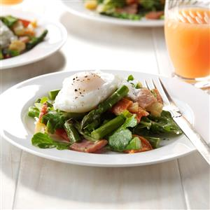

Easy Egg Recipe

Twisted Eggs Benedict Salad
Prep time
20mins
bake time
20 mins
Total time
40 mins
SERVES: 8
Ingredients
4 tablespoons olive oil, divided
1-1/2 pounds fresh asparagus, trimmed and chopped
1-1/3 cups chopped fennel bulb
8 ounces diced deli ham or Jones Canadian Bacon
6 cups baby kale salad blend (about 4 ounces)
1 cup chopped roasted sweet red peppers
3 tablespoons chopped green onion tops
3 tablespoons Dijon mustard
2 tablespoons cider vinegar
1/4 teaspoon salt
1/4 teaspoon pepper
2 quarts water
8 large eggs
Directions:
In a large nonstick skillet, heat 1 tablespoon olive oil over medium heat. Add asparagus, fennel and ham; saute until vegetables are crisp-tender, about 8 minutes. Cool 3 minutes.
Toss vegetable mixture with salad blend, peppers and green onions. Whisk together mustard, vinegar, salt, pepper and remaining oil until smooth.
In a large saucepan, bring water to a boil; reduce heat to a gentle simmer. Break eggs, one at a time, into a small bowl; slip eggs into water. Poach, uncovered, until whites are completely set and yolks begin to thicken, 3-5 minutes.
Meanwhile, toss salad with dressing. Divide salad among eight plates. Using a slotted spoon, remove eggs from water; place one on top of each salad. Yield: 8 servings.
Serve Hot. Enjoy!
NUTRITION
1 cup salad with 1 egg: 199 calories, 13g fat (3g saturated fat), 200mg cholesterol, 710mg sodium, 5g carbohydrate (3g sugars, 2g fiber), 14g protein. Diabetic Exchanges: 2 lean meat, 2 fat, 1 vegetable.